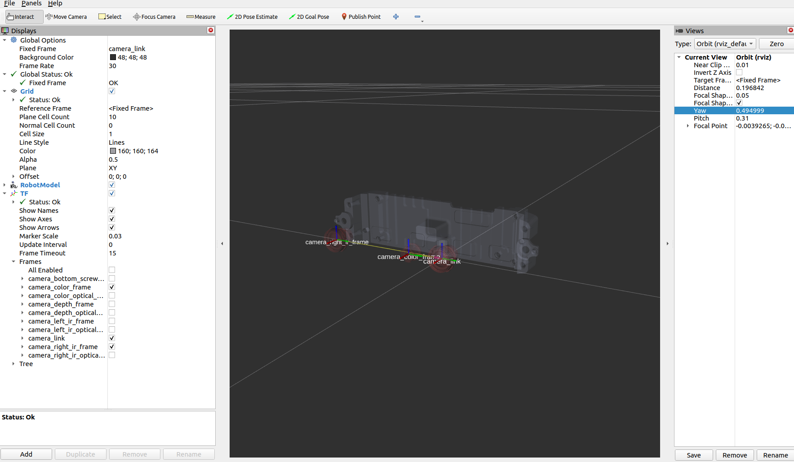

2.2. Package description
This section meticulously outlines all topics, services, launch scripts, and YAML configuration parameters included in the Orbbec SDK ROS2 package.
Contents:
2.2.1. All available topics
When orbbec_camera starts, it will, by default, publish the following topics:
| No. | Published topics | type | description |
|---|---|---|---|
| 1 | /camera/color/image_raw | [sensor_msgs/msg/Image] | The color stream image |
| 2 | /camera/color/image_raw/compressed | [sensor_msgs/msg/CompressedImage] | The color stream image compressed |
| 3 | /camera/color/image_raw/compressedDepth | [sensor_msgs/msg/CompressedImage] | |
| 4 | /camera/color/image_raw/theora | [theora_image_transport/msg/Packet] | color image metadata |
| 5 | /camera/color/metadata | [orbbec_camera_msgs/msg/Metadata] | |
| 6 | /camera/depth/camera_info | [sensor_msgs/msg/CameraInfo] | The depth camera information |
| 7 | /camera/depth/image_raw | [sensor_msgs/msg/Image] | The depth stream image |
| 8 | /camera/depth/image_raw/compressed | [sensor_msgs/msg/CompressedImage] | The depth stream image compressed |
| 9 | /camera/depth/image_raw/compressedDepth | [sensor_msgs/msg/CompressedImage] | |
| 10 | /camera/depth/image_raw/theora | [theora_image_transport/msg/Packet] | |
| 11 | /camera/depth/metadata | [orbbec_camera_msgs/msg/Metadata] | depth image metadata |
| 12 | /camera/depth/points | [sensor_msgs/msg/PointCloud2] | The point cloud, only available when enable_point_cloud is true |
| 13 | /camera/depth_filter_status | [std_msgs/msg/String] | depth filter status |
| 14 | /camera/depth_registered/points | [sensor_msgs/msg/PointCloud2] | The colored point cloud, only available when enable_colored_point_cloud is true. |
| 15 | /camera/depth_to_color | [orbbec_camera_msgs/msg/Extrinsics] | |
| 16 | /camera/depth_to_accel | [orbbec_camera_msgs/msg/Extrinsics] | |
| 17 | /camera/depth_to_gyro | [orbbec_camera_msgs/msg/Extrinsics] | |
| 18 | /camera/gyro/imu_info | [orbbec_camera_msgs/msg/IMUInfo] | imu information |
| 19 | /camera/gyro_accel/sample | [sensor_msgs/msg/Imu] | Synchronized data stream of acceleration and gyroscope，enable_sync_output_accel_gyro turned on |
| 20 | /clicked_point | [geometry_msgs/msg/PointStamped] | |
| 21 | /diagnostics | [diagnostic_msgs/msg/DiagnosticArray] | The diagnostic information of the camera, Currently, the diagnostic information only includes the temperature of the camera. |
| 22 | /goal_pose | [geometry_msgs/msg/PoseStamped] | |
| 23 | /initialpose | [geometry_msgs/msg/PoseWithCovarianceStamped] | |
| 24 | /parameter_events | [rcl_interfaces/msg/ParameterEvent] | |
| 25 | /rosout | [rcl_interfaces/msg/Log] 8 | |
| 26 | /tf | [tf2_msgs/msg/TFMessage] | |
| 27 | /tf_static | [tf2_msgs/msg/TFMessage] |
2.2.2. All available services
The name of the following services already expresses its function.
However, it should be noted that the corresponding set_[ir|depth|color]*
and get[ir|depth|color]* services are only available if you set enable[ir|depth|color]
to true in the stream that corresponds to the argument of the launch file.
Servies can be called like this:
# Get device info
ros2 service call /camera/get_device_info orbbec_camera_msgs/srv/GetDeviceInfo '{}'
# Get SDK version
ros2 service call /camera/get_sdk_version orbbec_camera_msgs/srv/GetString '{}'
# Set auto exposure
ros2 service call /camera/set_color_auto_exposure std_srvs/srv/SetBool '{data: false}'
# Save point cloud
ros2 service call /camera/save_point_cloud std_srvs/srv/Empty "{}"
| No. | Service | type | description |
|---|---|---|---|
| 1 | /camera/get_auto_white_balance | [orbbec_camera_msgs/srv/GetInt32] | get auto white balance |
| 2 | /camera/get_color_exposure | [orbbec_camera_msgs/srv/GetInt32] | get color exposure |
| 3 | /camera/get_color_gain | [orbbec_camera_msgs/srv/GetInt32] | get color gain |
| 4 | /camera/get_depth_exposure | [orbbec_camera_msgs/srv/GetInt32] | get depth exposure |
| 5 | /camera/get_depth_gain | [orbbec_camera_msgs/srv/GetInt32] | get depth information |
| 6 | /camera/get_device_info | [orbbec_camera_msgs/srv/GetDeviceInfo] | get device information |
| 7 | /camera/get_ldp_measure_distance | [orbbec_camera_msgs/srv/GetInt32] | get ldp distance |
| 8 | /camera/get_ldp_status | [orbbec_camera_msgs/srv/GetBool] | get ldp status |
| 9 | /camera/get_sdk_version | [orbbec_camera_msgs/srv/GetString] | get sdk version |
| 10 | /camera/get_white_balance | [orbbec_camera_msgs/srv/GetInt32] | get white balance |
| 11 | /camera/reboot_device | [std_srvs/srv/Empty] | reboot device |
| 12 | /camera/save_images | [std_srvs/srv/Empty] | save images |
| 13 | /camera/save_point_cloud | [std_srvs/srv/Empty] | save_point cloud |
| 14 | /camera/set_auto_white_balance | [std_srvs/srv/SetBool] | set_auto_white balance |
| 15 | /camera/set_color_auto_exposure | [std_srvs/srv/SetBool] | set_color_auto exposure |
| 16 | /camera/set_color_exposure | [orbbec_camera_msgs/srv/SetInt32] | set color exposure |
| 17 | /camera/set_color_gain | [orbbec_camera_msgs/srv/SetInt32] | set color gain |
| 18 | /camera/set_color_mirror | [std_srvs/srv/SetBool] | set_color mirror |
| 19 | /camera/set_depth_auto_exposure | [std_srvs/srv/SetBool] | set_depth_auto exposure |
| 20 | /camera/set_depth_exposure | [orbbec_camera_msgs/srv/SetInt32] | set depth exposure |
| 21 | /camera/set_depth_gain | [orbbec_camera_msgs/srv/SetInt32] | set depth gain |
| 22 | /camera/set_depth_mirror | [std_srvs/srv/SetBool] | set_depth mirror |
| 23 | /camera/set_fan_work_mode | [orbbec_camera_msgs/srv/SetInt32] | set fan work mode |
| 24 | /camera/set_floor_enable | [std_srvs/srv/SetBool] | set_floor enable |
| 25 | /camera/set_ir_long_exposure | [std_srvs/srv/SetBool] | set_ir_long exposure |
| 26 | /camera/set_laser_enable | [std_srvs/srv/SetBool] | set_laser enable |
| 27 | /camera/set_ldp_enable | [std_srvs/srv/SetBool] | set_ldp enable |
| 28 | /camera/set_white_balance | [orbbec_camera_msgs/srv/SetInt32] | set white balance |
| 29 | /camera/switch_ir | [orbbec_camera_msgs/srv/SetString] | switch left 、right ir |
| 30 | /camera/toggle_color | [std_srvs/srv/SetBool] | toggle color |
| 31 | /camera/toggle_depth | [std_srvs/srv/SetBool] | toggle depth |
2.2.3. Launch
| launch file list | description |
|---|---|
| orbbec_camera.launch.py | Generic ros launch script for a 3D camera product |
| orbbec_camera_multi_devices.launch.py | Multi-camera devices startup example script |
Run Command:
1. Launch Script for Specifying Device Type:
ros2 launch orbbec_camera orbbec_camera.launch.py config_file_path:=gemini_330_series.yaml
or
ros2 launch orbbec_camera orbbec_camera.launch.py camera_model:=gemini_330_series
Note:
The YAML configuration file located in the config/ directory is used. By default, gemini_330_series.yaml is selected. *
config_file_path:
The value of the config_file_path parameter is the path to the yaml configuration file corresponding to the camera product being used.
Supports the transmission of both absolute paths and relative paths to the config, or YAML files under the config can be specified without a path.
Supports demo example of intra-process communication
intra process example:
ros2 launch orbbec_camera orbbec_camera.launch.py camera_model:=gemini_intra_process_demo.yaml
camera_model:
The value of the camera_model parameter is the product type corresponding to the camera product being used.
2.multi device launch:
ros2 launch orbbec_camera orbbec_camera_multi_devices.launch.py
Note: By default, the multi-device test yaml configuration file in the config/multi_devices_test directory is used.*
multi-device configuration yaml reference: multi_camera.yaml or multi_camera_synced.yaml
2.2.4. YAML files
| product serials | yaml file | description |
|---|---|---|
| astra2 | astra2.yaml | astra2 camera default params |
| femto | femto.yaml | femto camera default params |
| femto mega | femto_mega.yaml | femto_mega camera default params |
| femto bolt | femto_bolt.yaml | femto_bolt camera default params |
| gemini2 | gemini2.yaml | gemini2 camera default params |
| gemini2L | gemini2L.yaml | gemini2L camera default params |
| gemini 330 series | gemini_330_series.yaml | gemini_330_series camera default params |
All YAML files are fundamentally similar, with the primary differences being the default parameter values set for various models within the same series. Differences in USB standards, such as USB 2.0 versus USB 3.0, may require parameter adjustments. In case of startup issues, please refer to the specification manual carefully. Pay particular attention to resolution settings and other parameters in the YAML file to ensure compatibility and optimal performance.
2.2.5. Coordinate Systems
2.2.5.1. ROS2(Robot) vs Optical(Camera) Coordination Systems
Point Of View:
Imagine we are standing behind of the camera, and looking forward.
Always use this point of view when talking about coordinates, left vs right IRs, position of sensor, etc..

ROS2 Coordinate System: (X: Forward, Y:Left, Z: Up)
Camera Optical Coordinate System: (X: Right, Y: Down, Z: Forward)
All data published in our wrapper topics is optical data taken directly from our camera sensors.
static and dynamic TF topics publish optical CS and ROS CS to give the user the ability to move from one CS to other CS.
2.2.5.2. Camera sensor structure


2.2.5.3. TF from coordinate A to coordinate B:
In Orbbec cameras, the origin point (0,0,0) is taken from the camera_link position
Our wrapper provide static TFs between each sensor coordinate to the camera base (camera_link)
Also, it provides TFs from each sensor ROS coordinates to its corrosponding optical coordinates.
Example of static TFs of RGB sensor and right infra sensor of Gemini335 module as it shown in rviz2:
ros2 launch orbbec_description view_model.launch.py model:=gemini_335_336.urdf.xacro
